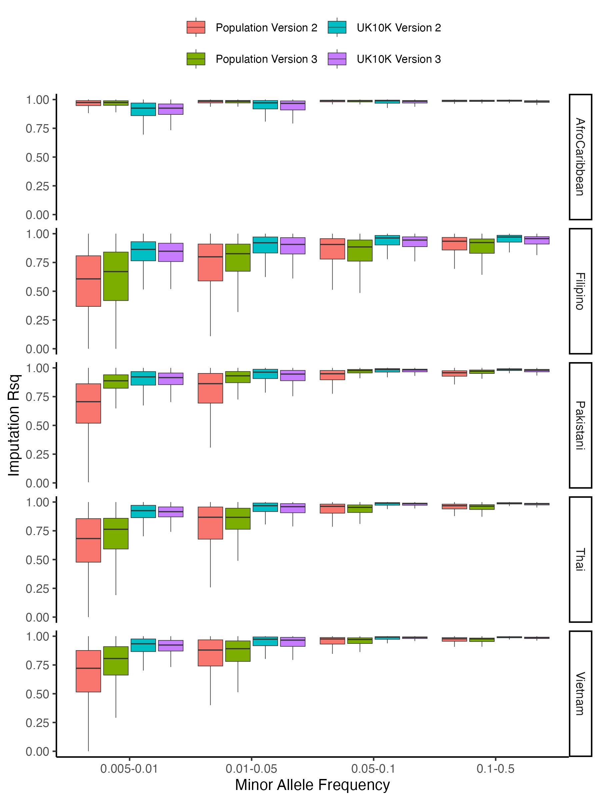
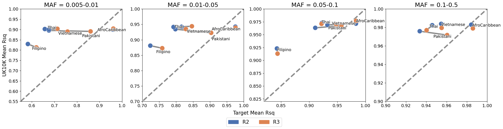
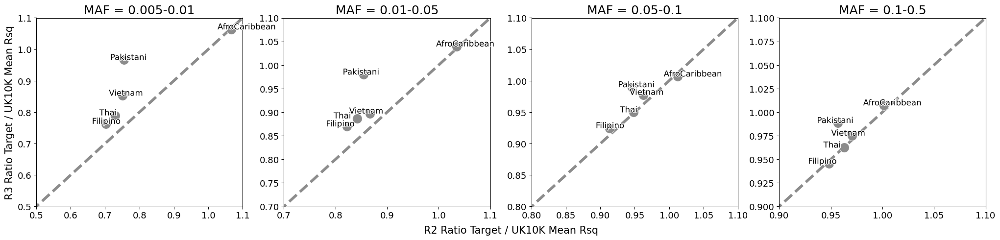

In December 2023, the TOPMed imputation server published a major update. These changes included a new reference panel, TOPMed-r3, with ~30% more sites and samples than the previous iteration, TOPMed-r2. Given the expanded samples sizes, there is potential that populations outlined in our work could now be imputed with higher accuracy (see our interactive world map to view how the TOPMed-r2 panel imputes global populations). In this note, we provided additional analysis showing that imputation of diverse, global, populations indeed improved with TOPMed-r3 panel, but persistent disparity still exist across these populations in general.
We selected five populations (Afro-Caribbean, Filipino, Vietnamese, Thai, Pakistani) discussed in our work and examined the Imputation Rsq, an estimate of imputation accuracy. Imputation Rsq was stratified across minor allele frequency (MAF) to control the impact of allele frequency on imputation accuracy. In addition to imputing each target population, we also imputed a European control population matching in SNP content and sample size, extracted from the UK10K BioBank. (We additionally have to correct for mis-specified reference and alternative alleles, a feature that is no longer automatically corrected by the TOPMed imputation server.) Across all populations, the TOPMed-r3 panel improved imputation Rsq for the target population, likely due to the additional reference samples. The TOPMed-r3 panel improved mean imputation Rsq for variants with 1-5% MAF for the Afro-Caribbean, Filipino, Vietnamese, Thai, and Pakistani populations by 0.05%, 4.9%, 3.7%, 4.6%, and 13.3%, respectively (Figure 1). Interestingly, in four out of the five instances tested, genotypes of the control UK10K population were imputed more poorly using the TOPMed-r3 reference panel; imputation Rsq decreased for variants with 1-5% MAF between 0.4% to 1.3% (Figure 1).

Imputing with theTOPMed-r3 panel appears to improve the imputation Rsq of the target population with respect to the control population. Figure 2 shows the mean imputation Rsq for the UK10K control population plotted against the target population for both TOPMed-r2 and -r3. The x=y line indicates when target and control populations are imputed with the same accuracy. Across all populations, imputation with TOPMed-r3 particularly improves accuracy for rare variants (e.g. MAF < 5%). For common variants (e.g. MAF > 5%), the Pakistani population is the only population with significant improvement in shrinking the gap between the target and control accuracies. For all minor allele frequencies, there is little difference for the Afro-Caribbean population, as this population is imputed with nearly equal imputation accuracy as the controls.

In our previous work, we used the ratio of target to control mean imputation Rsq to summarize the loss of accuracy for non-European populations. Figure 3 plots this ratio for TOPMed-r3 vs TOPMed-r2. Populations plotted above the x=y line indicates that imputation with the TOPMed-r3 panel improves imputation with respect to the UK10K control population. Imputing the Thai, Vietnamese, Filipino, and Pakistani populations with the TOPMed-r3 panel shows improvement in the ratio over that of TOPMed-r2 for rare variants (MAF < 5%). However, for common variants (MAF > 5%), there is little difference, likely because these variants are already imputed well. Ultimately, despite these improvements, the Thai, Vietnamese, Filipino, and Pakistani populations are still imputed with lower accuracy compared to that of the European-ancestry controls from UK10K.

Our results demonstrate that imputing with the TOPMed-r3 panel improves imputation accuracy for ancestrally-diverse populations. However, despite these improvements, gaps in imputation accuracy still persist, especially when imputing rarer variants. While the further expansions of the TOPMed imputation server are welcomed, the conclusions of our original work remain qualitatively the same, and we must continue to increase representation in large imputation panels.